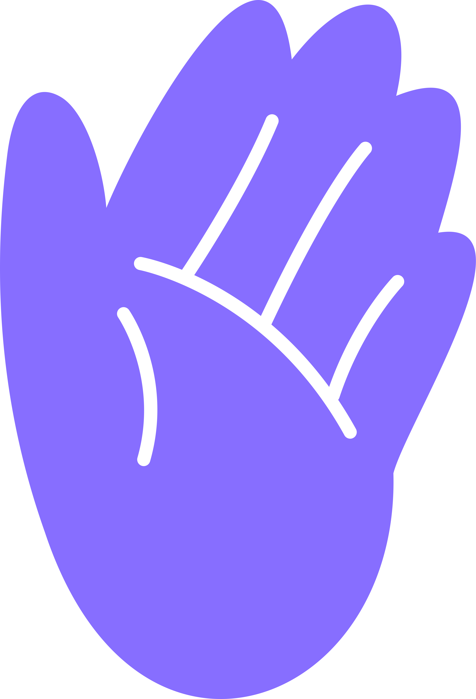
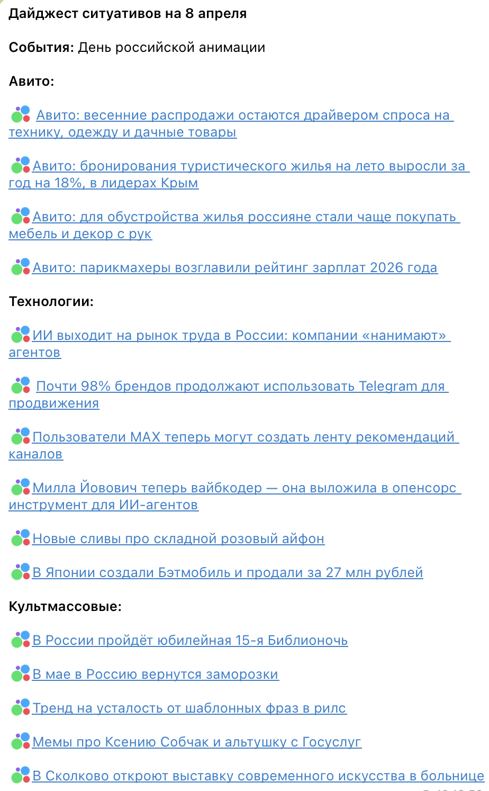
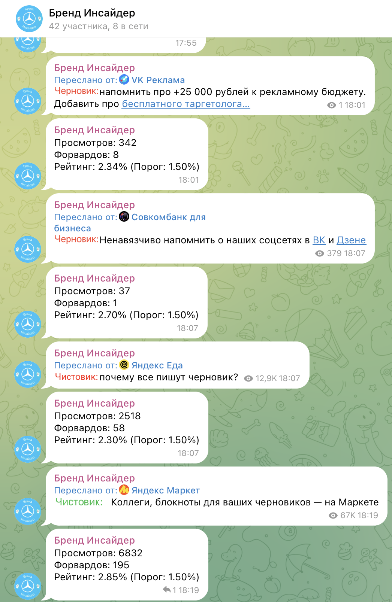
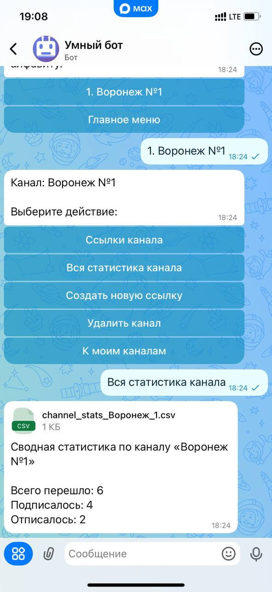
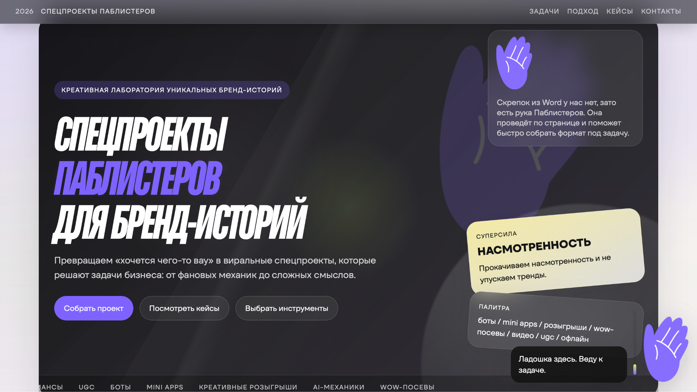
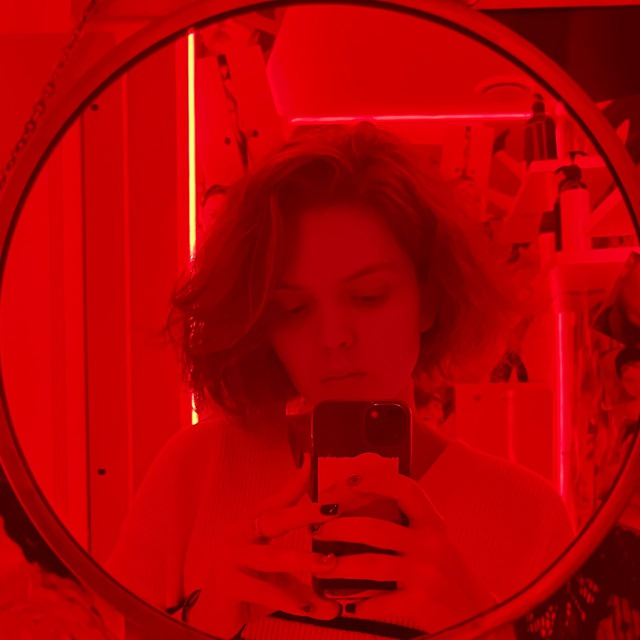
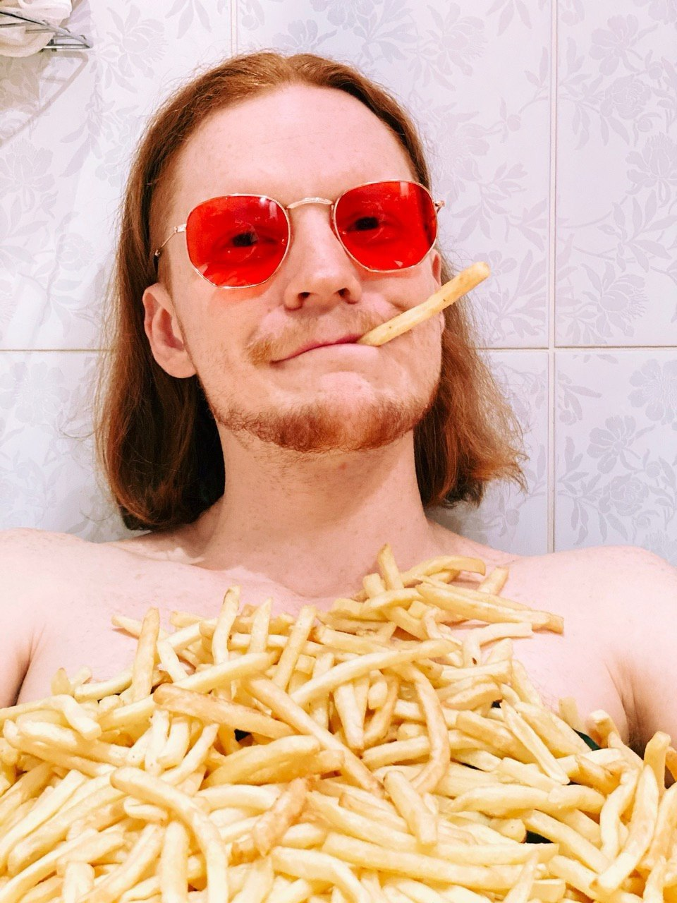

идей придумали, забраковали и защитили

Спецпроекты Паблистеров
Отчёт Q1 2026
Квартал, в котором мы одновременно питчили, трендвотчили, вайбкодили, собирали MAX, пересобирали себя и упаковывали отдел в отдельный веб-объект
тендера с идеями спецпроектов
опен-колла среди Паблистеров провели внутри команды
прототип бота в MAX собрали и вывели в тест
интерактивный сайт собрали и запустили в бете
Питчинг
Придумали, забраковали и защитили 100+ идей
для Яндекс Go, Сбер, СберБизнес, Карьера в Сбере, Для тех, кто рулит, VK Tech, Авито и других
И даже сняли пилотный выпуск нейрослоп-сериала!
Тендеры
Уже дважды поучаствовали
в тендерах не со
стратегиями бренд-медиа,
а с идеями
спецпроектов
Видим, что у крупных игроков есть запрос на крейзи-идеи
02
тендера с идеями спецпроектов
Трендвотчинг
Адаптировали формат Ситуативошной для нового клиента и автоматизировали часть процессов
Бот Бренд Инсайдер анализирует ленту Telegram, сужает диапазон поиска в зависимости от запроса и собирает аналитику по популярным постам


Вайбкодинг
Научились создавать
интерактивные посты с
кнопками и игры
в мини-аппах без
привлечения
подрядчиков
Это открывает доступ к огромному количеству уникальных механик и сверхмаржинальных интеграций
Опен-колл
Уже дважды провели опен-колл среди Паблистеров
Потому что идей не бывает мало, а креатив не должен пылиться на полке
Спасибо каждому за участие, ЭТО ПОВТОРИТСЯ
MAX
Сделали прототип бота в MAX
с помощью которого можно бесшовно телепортировать людей из Telegram и проверять, кто из них подписался
Находимся в поиске новых способов сделать жизнь в Max легче и приветствуем ваши идеи!

Селф-мейдинг
Совершили каминг-аут и разложили по полочкам: кто мы, откуда и куда мы идём
Создали презентацию о возможностях и кейсах отдела и перенесли на бета-версию интерактивного сайта
special.publisters.ru
Тим билдинг
Пересобрали команду Отдела спецпроектов
чтобы кто-то вместо Игоря заполнял документацию и отвечал на ваши «@vtikmashina клиент хочет спецпроект»
Познакомьтесь с Полиной из Берлина


«От меня что требуется?»
Что требуется
Узнавать у клиента, почему нет
Спрашивать, чего не хватило
Предлагать доработать по обратной связи
Интересоваться планами и хотелками
Намекать, что мы умеем не только в контент и продакшн, а ещё и в разработку и креатив
Финал